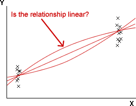

Standard error of slope
When the least squares slope, b1, is used as an estimate
of β1,
it has standard
error,

where
- σ is the standard deviation of the errors — i.e. the spread of points around
the regression line,
- n is the number of data points, and
- sx is the sample standard deviation of X.
Implications for data collection
The standard error of b1 is lowest
when:
- the response standard deviation, σ, is low
- the sample size, n, is large
- the spread of x-values is high
To get the most accurate estimate of the slope from experimental data,
- Reduce σ
- σ can be reduced by ensuring that the experimental units are as similar as
possible.
- Increase n
- Collect as much data as possible.
- Increase sx
- Choose to run the experiment with x-values that are widely spread.
However don't just collect data at the ends of the 'acceptable'
range of x-values, even though this maximises sx.
